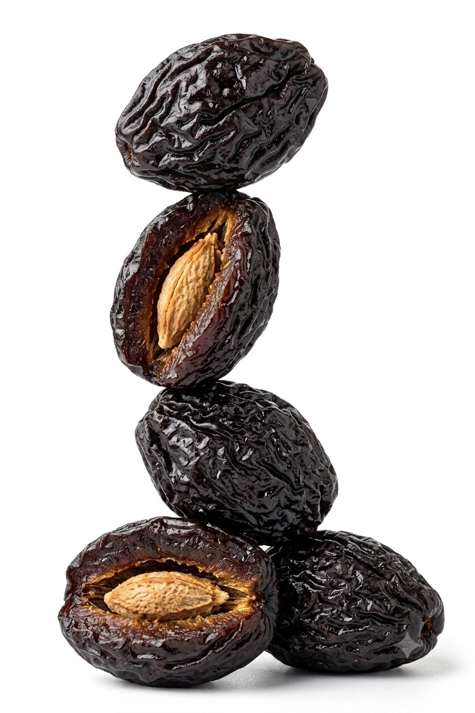
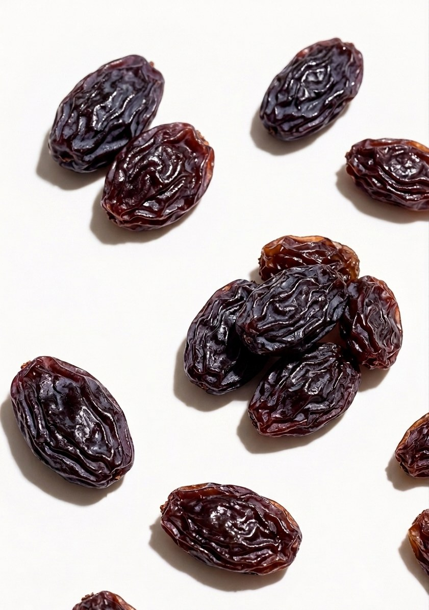
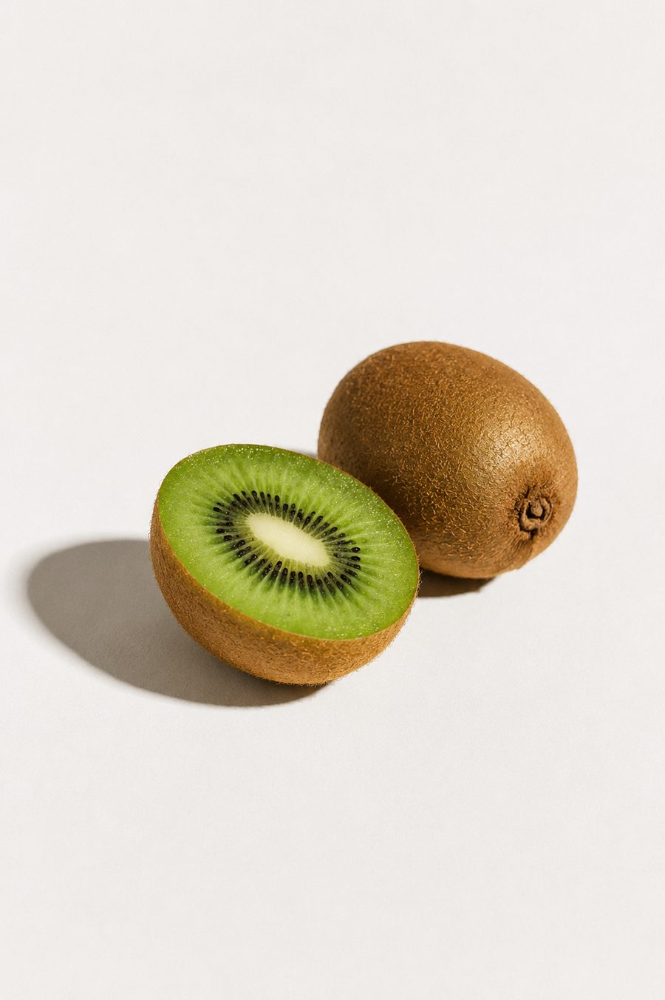
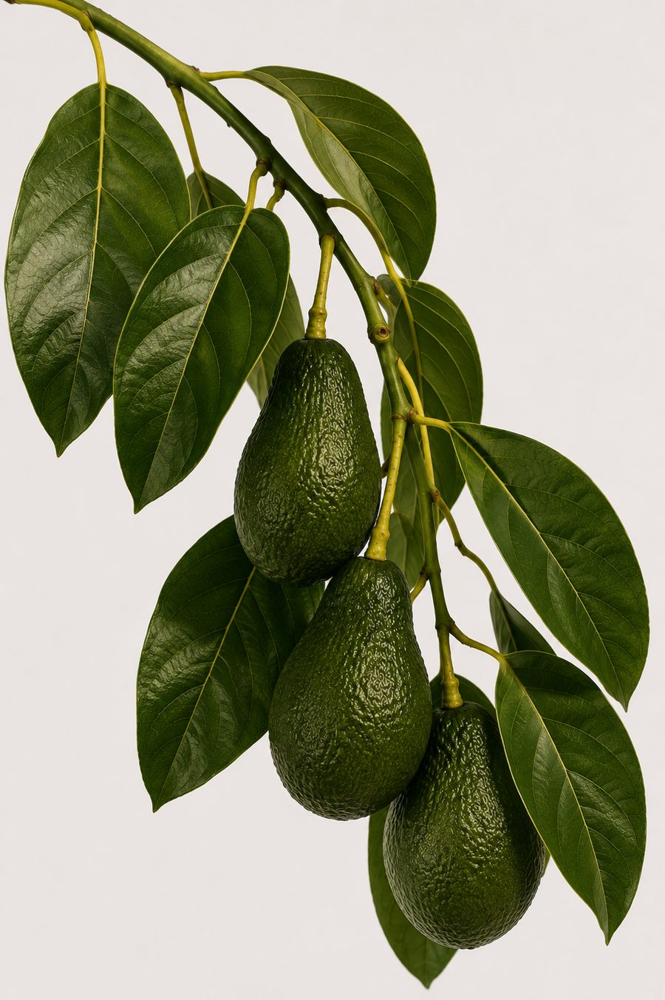
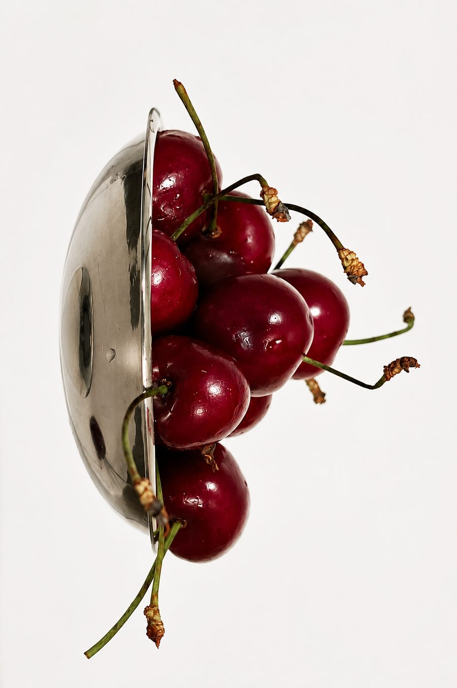
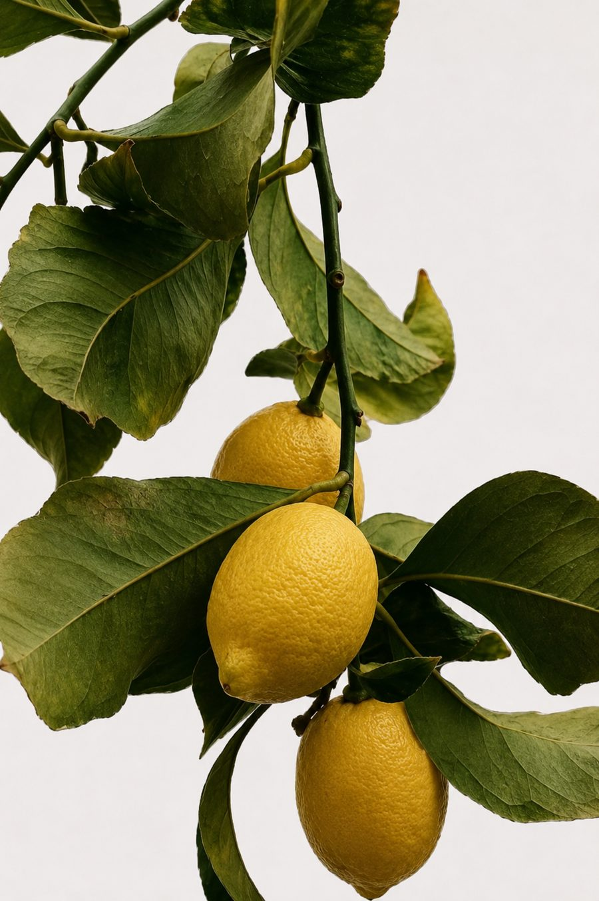
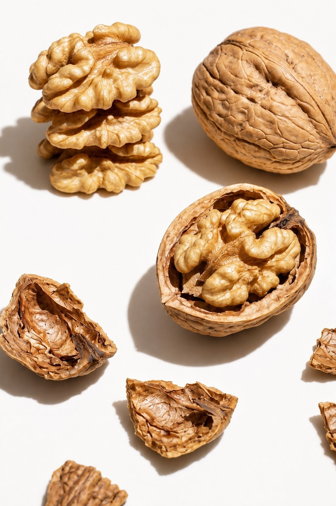

Exportamos y comercializamos fruta fresca y fruta deshidratada de calidad, trabajando con productores chilenos en cada etapa: selección, proceso y despacho a destino.
"No exportamos solamente fruta.
Exportamos confianza."
Agua de Frutos nace en Chile para seleccionar lo que la tierra ofrece en su mejor punto: origen, calidad y el trabajo de productores que conocemos de cerca.
Cada envío es el resultado de un criterio de selección heredado de nuestra experiencia junto a Fruit Cascade Exports en Argentina, aplicado ahora a la fruta chilena.
Cada línea responde a un origen, una temporada y un estándar de calidad definidos.

En condición natural con carozo, con humedad controlada y calibre consistente. Ofrecemos una gama completa de tamaños adaptados a la demanda del cliente, aptas para procesamiento de alimentos, panificación y consumo directo.

Rubias, morenas y rosadas, clasificadas por tamaño para consumo directo e industria.

Cosechado y calibrado por temporada, con manejo poscosecha cuidado.

Variedad Hass, seleccionada por calibre y punto óptimo de conservación.

Fruta de temporada corta, con logística preparada para envío aéreo y marítimo.

Seleccionado por calibre, color y contenido de jugo para exportación.

Disponibles en formato pulpa o con cáscara, clasificadas por color, para mercado gourmet e industria.
Despachamos hacia los mercados más exigentes, con logística adaptada a cada destino.
Cuatro etapas, un mismo estándar de calidad en cada una.
Elegimos cada lote en campo junto al productor, según calibre y calidad.
Proceso y clasificación adaptados al producto y al mercado de destino.
Control antes del despacho para asegurar que cada envío cumpla lo acordado.
Coordinación de despacho FOB o CIF según la necesidad logística del comprador.
Sabemos de qué productor y qué campo viene cada lote que comercializamos.
Adaptamos formato y presentación según el destino y el comprador.
Coordinamos cada etapa, desde la cotización hasta la llegada del pedido.
Coticemos tu próximo pedido.